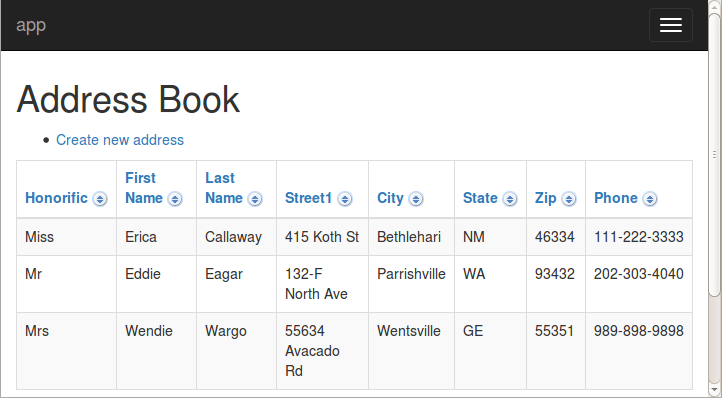

Using Tapestry With Hibernate
So, you fill in all the fields, submit the form (without validation errors) and voila: you get back the same form, blanked out. What happened, and where did the data go?
What happened is that we haven’t told Tapestry what to do after the form is successfully submitted (by successful, we mean, with no validation errors). Tapestry’s default behavior is to redisplay the active page, and that occurs in a new request, with a new instance of the Address object (because the address field is not a peristent field).
Well, since we’re creating objects, we might as well store them somewhere … in a database. We’re going to quickly integrate Tapestry with Hibernate as the object/relational mapping layer, and ultimately store our data inside a HyperSQL (HSQLDB) database. HSQLDB is an embedded database engine and requires no installation – it will be pulled down as a dependency by Maven.
Re-configuring the Project
We’re going to bootstrap this project from a simple Tapestry project to one that uses Hibernate and HSQLDB.
Updating the Dependencies
First, we must update the POM to list a new set of dependencies, that includes Hibernate, the Tapestry/Hibernate integration library, and the HSQLDB JDBC driver:
<dependencies>
<dependency>
<groupId>org.apache.tapestry</groupId>
<artifactId>tapestry-hibernate</artifactId>
<version>${tapestry-release-version}</version>
</dependency>
<dependency>
<groupId>org.hsqldb</groupId>
<artifactId>hsqldb</artifactId>
<version>2.3.2</version>
</dependency>
...
</dependencies>The tapestry-hibernate library includes, as transitive dependencies, Hibernate and tapestry-core.
This means that you can simply replace tapestry-core with tapestry-hibernate inside the <artifactId> element.
After changing the POM and saving, Maven should automatically download the JARs for the new dependencies.
Hibernate Configuration
Hibernate needs a master configuration file, hibernate.cfg.xml, used to store connection and other data.
Create this in your src/main/resources folder:
<!DOCTYPE hibernate-configuration PUBLIC
"-//Hibernate/Hibernate Configuration DTD 3.0//EN"
"http://hibernate.sourceforge.net/hibernate-configuration-3.0.dtd">
<hibernate-configuration>
<session-factory>
<property name="hibernate.connection.driver_class">org.hsqldb.jdbcDriver</property>
<property name="hibernate.connection.url">jdbc:hsqldb:./target/work/t5_tutorial1;shutdown=true</property>
<property name="hibernate.dialect">org.hibernate.dialect.HSQLDialect</property>
<property name="hibernate.connection.username">sa</property>
<property name="hibernate.connection.password"></property>
<property name="hbm2ddl.auto">update</property>
<property name="hibernate.show_sql">true</property>
<property name="hibernate.format_sql">true</property>
</session-factory>
</hibernate-configuration>Most of the configuration is to identify the JDBC driver and connection URL.
Note the connection URL.
We are instructing HSQLDB to store its database files within our project’s target directory.
We are also instructing HSQLDB to flush any data to these files at shutdown.
This means that data will persist across different invocations of this project, but if the target directory is destroyed (e.g., via mvn clean), then all the database contents will be lost.
In addition, we are configuring Hibernate to update the database schema; when Hibernate initializes it will create or even modify tables to match the entities. Finally, we are configuring Hibernate to output any SQL it executes, which is very useful when initially building an application.
But what entities?
Normally, the available entities are listed inside hibernate.cfg.xml, but that’s not necessary with Tapestry; in another example of convention over configuration, Tapestry locates all entity classes inside the entities package (com.example.tutorial1.entities in our case) and adds them to the configuration.
Currently, that is just the Address entity.
Adding Hibernate Annotations
For an entity class to be used with Hibernate, some Hibernate annotations must be added to the class.
Below is the updated Address class, with the Hibernate annotations (as well as the Tapestry ones).
package com.example.tutorial1.entities;
import javax.persistence.Entity;
import javax.persistence.GeneratedValue;
import javax.persistence.GenerationType;
import javax.persistence.Id;
import org.apache.tapestry5.beaneditor.NonVisual;
import org.apache.tapestry5.beaneditor.Validate;
import com.example.tutorial1.data.Honorific;
@Entity
public class Address
{
@Id
@GeneratedValue(strategy = GenerationType.IDENTITY)
@NonVisual
public Long id;
public Honorific honorific;
@Validate("required")
public String firstName;
@Validate("required")
public String lastName;
public String street1;
public String street2;
@Validate("required")
public String city;
@Validate("required")
public String state;
@Validate("required,regexp")
public String zip;
public String email;
public String phone;
}The Tapestry annotations, @NonVisual and @Validate, may be placed on the setter or getter method or on the field (as we have done here).
As with the Hibernate annotations, putting the annotation on the field requires that the field name match the corresponding property name.
-
@NonVisual– indicates a field, such as a primary key, that should not be made visible to the user. -
@Validate– identifies the validations associated with a field.
At this point you should stop and restart your application.
Updating the Database
So we have a database set up, and Hibernate is configured to connect to it. Let’s make use of that to store our Address object in the database.
What we need is to provide some code to be executed when the form is submitted. When a Tapestry form is submitted, there is a whole series of events that get fired. The event we are interested in is the "success" event, which comes late in the process, after all the values have been pulled out of the request and applied to the page properties, and after all server-side validations have occurred.
The success event is only fired if there are no validation errors.
Our event handler must do two things:
-
Use the Hibernate Session object to persist the new Address object.
-
Commit the transaction to force the data to be written to the database.
Let’s update our CreateAddress.java class:
package com.example.tutorial1.pages.address;
import com.example.tutorial1.entities.Address;
import com.example.tutorial1.pages.Index;
import org.apache.tapestry5.annotations.InjectPage;
import org.apache.tapestry5.annotations.Property;
import org.apache.tapestry5.hibernate.annotations.CommitAfter;
import org.apache.tapestry5.ioc.annotations.Inject;
import org.hibernate.Session;
public class CreateAddress
{
@Property
private Address address;
@Inject
private Session session;
@InjectPage
private Index index;
@CommitAfter
Object onSuccess()
{
session.persist(address);
return index;
}
}The @Inject annotation tells Tapestry to inject a service into the annotated field; Tapestry includes a sophisticated Inversion of Control container (similar in many ways to Spring) that is very good at locating available services by type, rather than by a string id.
In any case, the Hibernate Session object is exposed as a Tapestry IoC service, ready to be injected (this is one of the things provided by the tapestry-hibernate module).
Tapestry automatically starts a transaction as necessary; however that transaction will be aborted at the end of the request by default. If we make changes to persistent objects, such as adding a new Address object, then it is necessary to commit the transaction.
The @CommitAfter annotation can be applied to any component method; if the method completes normally, the transaction will be committed (and a new transaction started to replace the committed transaction).
After persisting the new address, we return to the main Index page of the application.
Note: In real applications, it is rare to have pages and components directly use the Hibernate Session. It is generally a better approach to define your own Data Access Object layer to perform common update operations and queries.
Showing Addresses
As a little preview of what’s next, let’s display all the Addresses entered by the user on the Index page of the application. After you enter a few names, it will look something like:

Adding the Grid to the Index page
So, how is this implemented? Primarily, its accomplished by the Grid component.
The Grid component is based on the same concepts as the BeanEditForm component; it can pull apart a bean into columns.
The columns are sortable, and when there are more entries than will fit on a single page, page navigation is automatically added.
A minimal Grid is very easy to add to the template.
Just add this near the bottom of Index.tml:
<t:grid source="addresses"
include="honorific,firstName,lastName,street1,city,state,zip,phone"/>Note that the Grid component accepts many of the same parameters that we used with the BeanEditForm.
Here we use the include parameter to specify the properties to show, and in what order.
Now all we have to do is supply the addresses property in the Java code. Here’s how Index.java should look now:
package com.example.tutorial1.pages;
import java.util.List;
import org.apache.tapestry5.ioc.annotations.Inject;
import org.hibernate.Session;
import com.example.tutorial1.entities.Address;
public class Index
{
@Inject
private Session session;
public List<Address> getAddresses()
{
return session.createCriteria(Address.class).list();
}
}Here, we’re using the Hibernate Session object to find all Address objects in the database. Any sorting that takes place will be done in memory. This is fine for now (with only a handful of Address objects in the database). Later we’ll see how to optimize this for very large result sets.
What’s Next?
We have lots more to talk about: more components, more customizations, built-in Ajax support, more common design and implementation patterns, and even writing your own components (which is easy!).
Check out the many Tapestry resources available on the Documentation page, including the Getting Started and FAQ pages and the Cookbook. Be sure to peruse the User Guide, which provides comprehensive details on nearly every Tapestry topic. Finally, be sure to visit (and bookmark) Tapestry JumpStart, which provides a nearly exhaustive set of tutorials.